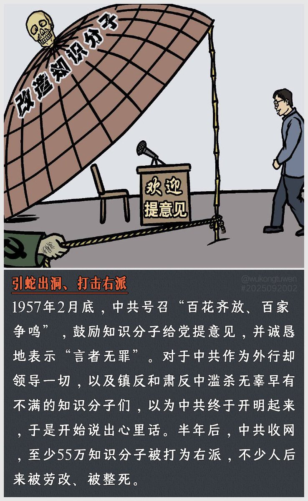

愿晚星照常升起🌈(keep4o)
@tadatsukiei
@EzraRan__

漣 絵樹羅
@EzraRan__
投稿者：毛泽东
“我们的方针是百花齐放，百家争鸣……放手让大家讲意见，使人们敢于说话，敢于批评，敢于争论。”
“大胆地放，大胆地鸣……帮助共产党整风。”
—1957年2、4月 毛泽东
“牛鬼蛇神只有让它们出笼，才好歼灭它们，使人民看见，原来世界上还有这些东西，以便动手歼灭这些丑类。”
—7月毛泽东 https://t.co/AQJXrJQVwe